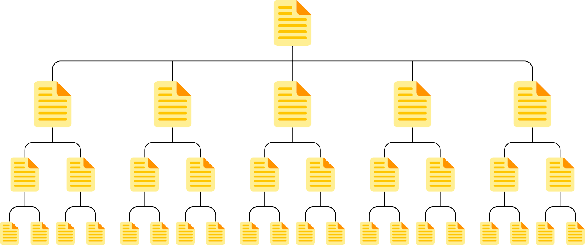
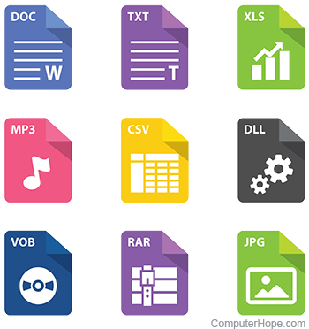
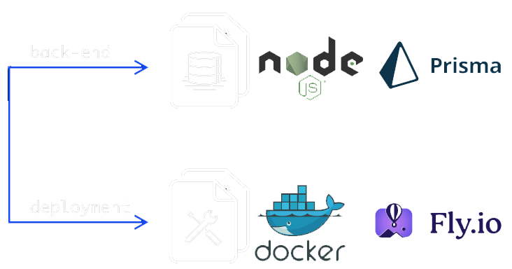

Разработка структуры Web-узла
Веб-узел
совокупность веб-страниц, связанных между собой общей тематикой, дизайном и навигацией, размещенных на одном сервере
Веб-страницы
HTML-документы, содержащие информацию и элементы взаимодействия
<!DOCTYPE html>
<html lang="en">
<head>
<meta charset="UTF-8">
<meta name="viewport" content="width=device-width, initial-scale=1.0">
<title>...</title>
</head>
<body>
...
</body>
</html>
Ресурсы
изображения, стили, скрипты, видео и другие мультимедиа-файлы
Серверная часть
база данных, серверные скрипты и API для обеспечения функциональности
HyperText Markup Language
HTML
язык разметки гипертекста, основной инструмент для создания веб-страниц
Тэг
основные строительные блоки веб-страниц, которые используются для разметки контента
<html> <-- открывающий тег
Контент тега HTML <-- содержимое/контент тега
</html> <-- закрывающий тег (у некоторых тегов отсутствует)
HTML
Создает основу: текст, заголовки, изображения, формы.
Определяет семантические блоки:
<header>
,
<main>
,
<footer>
.
Включает гиперссылки для перехода между страницами.
CSS
Определяет цвета, шрифты, размеры элементов.
Устанавливает расположение блоков:
flexbox
,
grid
.
Реализует анимации и переходы.
JavaScript
Добавляет интерактивные элементы
Реализует взаимодействие с сервером
Управляет состоянием интерфейса в реальном времени
Этапы развития HTML
HTML
1.0
первая версия языка, предложенная Тимом Бернерсом-Ли , которая позволяла связывать текстовые документы гиперссылками, создавая основу для простых веб-страниц
<!DOCTYPE HTML PUBLIC "-//W3C//DTD HTML 1.0//EN">
<html>
<head>
<title>Sample HTML 1.0</title>
</head>
<body>
<h1>Welcome to HTML 1.0</h1>
<p>This is a paragraph of text in HTML 1.0.</p>
<ul>
<li>Item 1</li>
<li>Item 2</li>
<li>Item 3</li>
</ul>
<p>Enjoy learning HTML!</p>
</body>
</html>
Этапы развития HTML
HTML
4.0
таблицы, формы, фреймы и возможности для работы с мультимедиа через плагины
<!DOCTYPE html PUBLIC "-//W3C//DTD HTML 4.01 Transitional//EN" "http://www.w3.org/TR/html4/loose.dtd">
<html lang="en">
<head>
<meta charset="UTF-8">
<meta name="viewport" content="width=device-width, initial-scale=1.0">
<title>Sample HTML 4.01</title>
<link rel="stylesheet" href="style.css">
<script src="script.js"></script>
</head>
<body>
<h1>Welcome to HTML 4.01</h1>
<p>This is a paragraph of text using HTML 4.01 with more features.</p>
<a href="https://example.com" target="_blank">Visit Example</a>
<h2>Unordered List</h2>
<ul>
<li>Item 1</li>
<li>Item 2</li>
<li>Item 3</li>
</ul>
<h2>Table Example</h2>
<table border="1">
<tr>
<th>Name</th>
<th>Age</th>
</tr>
<tr>
<td>John</td>
<td>30</td>
</tr>
<tr>
<td>Jane</td>
<td>25</td>
</tr>
</table>
<form action="/submit" method="post">
<label for="name">Name:</label>
<input type="text" id="name" name="name">
<input type="submit" value="Submit">
</form>
</body>
</html>
Этапы развития HTML
HTML
5
семантические теги, встроенная поддержка видео и аудио, а также интеграция API для работы с геолокацией, веб-хранилищами и графикой
<!DOCTYPE html>
<html lang="en">
<head>
<meta charset="UTF-8">
<meta name="viewport" content="width=device-width, initial-scale=1.0">
<title>Sample HTML5</title>
<link rel="stylesheet" href="style.css">
<script src="script.js" defer></script>
</head>
<body>
<header>
<h1>Welcome to HTML5</h1>
<nav>
<ul>
<li><a href="#home">Home</a></li>
<li><a href="#about">About</a></li>
<li><a href="#contact">Contact</a></li>
</ul>
</nav>
</header>
<section>
<h2>HTML5 Features</h2>
<p>This is a paragraph in an HTML5 document, with semantic elements and modern web features.</p>
<article>
<h3>New HTML5 Elements</h3>
<p>HTML5 introduced semantic elements like <code><article></code>, <code><section></code>, and <code><nav></code>.</p>
</article>
<figure>
<img src="example.jpg" alt="Example Image">
<figcaption>An image showcasing HTML5 features</figcaption>
</figure>
</section>
<footer>
<p>© 2025 HTML5 Example</p>
</footer>
<form action="/submit" method="post">
<label for="email">Email:</label>
<input type="email" id="email" name="email" required>
<input type="submit" value="Submit">
</form>
<video width="320" height="240" controls>
<source src="video.mp4" type="video/mp4">
Your browser does not support the video tag.
</video>
</body>
</html>
Веб-дизайн за 4 минуты
Современные тенденции веб-разработки
Доступность
Accessibility
концепция, которая заключается в создании веб-сайтов и приложений, которые могут быть использованы людьми с различными ограничениями, такими как проблемы со зрением, слухом, моторикой или когнитивными способностями
- Текстовые альтернативы для визуальных элементов
- Поддержка клавиатурной навигации
- Цветовая контрастность
- Использование семантической разметки
- Адаптивность и мобильная версия
SEO
Search Engine Optimization
процесс оптимизации веб-сайта таким образом, чтобы он был максимально видимым и удобным для поисковых систем
- Ключевые слова
- Семантическая структура
- Мобильная адаптивность
- Скорость загрузки
- Внешние и внутренние ссылки
- Адаптация к алгоритмам поисковых систем
Целеполагание при разработке Web-страниц
этап, который помогает определить задачи и цели, которые сайт должен решать
Определение целей сайта
Прежде чем начать разработку, важно четко понимать, что должен выполнять сайт
Например
- Какую проблему решает сайт?
- Кто является целевой аудиторией?
- Какие действия должны совершать пользователи на сайте? (например, оформить покупку, подписаться на рассылку, прочитать статью)
- Какие ключевые показатели будут использоваться для оценки успеха сайта? (например, конверсии, время на сайте, количество просмотров)
Типы целей сайта
- Информационные : сайт предоставляет информацию, например, новости, блоги, статьи.
- Коммерческие : сайт имеет целью продажи товаров или услуг, например, интернет-магазины.
- Интерактивные : сайты, которые позволяют пользователям взаимодействовать, например, социальные сети, форумы.
- Образовательные : сайт используется для обучения или предоставления обучающих материалов.
Пользовательские цели
- Удобство и простота : сайт должен быть простым в навигации и предоставлять пользователю удобный опыт.
- Доступность : сайт должен быть доступен для всех пользователей, включая тех, кто имеет ограниченные возможности.
- Интерактивность : функциональные элементы, такие как формы, кнопки и меню, должны быть интуитивно понятными и работать без задержек.
Методы и инструменты для постановки целей
- Составление целевой аудитории : кто будут пользователи сайта (их возраст, интересы, привычки)?
- Тестирование и анализ : использование аналитических инструментов, таких как Google Analytics, для отслеживания поведения пользователей на сайте и корректировки целей.
- Установление KPI (ключевых показателей эффективности) : важно определить, какие показатели будут использоваться для оценки выполнения целей
Правила разработки веб-страниц
Скорость загрузки страницы
Скорость загрузки напрямую влияет на восприятие сайта. Пользователи ожидают, что страница загрузится за 2–3 секунды . Медленная загрузка может привести к оттоку посетителей
- Используйте современные форматы изображений , такие как WebP, которые обеспечивают хорошее качество при меньшем размере файла.
- Минимизируйте CSS, JavaScript и HTML , чтобы уменьшить объем передаваемых данных.
- Применяйте ленивую загрузку (lazy loading) для изображений и видео, чтобы ресурсы загружались только по мере необходимости.
Удобство использования (юзабилити)
Юзабилити сайта определяется тем, насколько легко пользователи могут выполнить свои задачи . Удобный сайт повышает лояльность аудитории
-
Навигация
: Меню должно быть логичным и доступным. Например,
размещение главного меню в верхней части страницы –
привычный и удобный для большинства пользователей
формат.
Форма поиска
: Если на сайте много контента, обеспечьте его поиск
с помощью встроенной строки.
Принципы визуальной иерархии
: Важные элементы (заголовки, кнопки) должны быть
выделены крупным размером, яркими цветами или
контрастом.
Читаемость шрифтов
Шрифты играют ключевую роль в удобстве чтения текста на экране. Выбор правильного шрифта обеспечивает комфортное восприятие информации
- Наиболее читаемыми для электронных устройств являются шрифты без засечек (sans-serif) , например, Arial, Helvetica, Roboto, Open Sans.
- Оптимальный размер основного текста: 16–18 пикселей . Для заголовков размер должен быть больше (24 пикселя и выше).
- Минимальный контраст текста с фоном должен соответствовать требованиям WCAG (например, черный текст на белом фоне или белый текст на темно-сером фоне).
Планирование и структура
Перед разработкой необходимо четко определить цели сайта, аудиторию и задачи. Планирование структуры помогает избежать хаоса в организации контента.
- Разбейте контент на логические разделы . Например, для корпоративного сайта это могут быть «О компании», «Услуги», «Контакты».
- Используйте карту сайта (sitemap) для упрощения навигации и улучшения индексации поисковыми системами.
- В структуре сайта старайтесь соблюдать правило трех кликов: пользователь должен найти нужную информацию не более чем за три клика .
Адаптивный дизайн
Сайт должен быть удобен для просмотра на любых устройствах: от смартфонов до широкоформатных мониторов
- Основные разрешения, которые должен поддерживать сайт: 320px (смартфоны), 768px (планшеты), 1024px (ноутбуки), 1440px и выше (настольные ПК) .
- Используйте медиазапросы в CSS для адаптации интерфейса под разные экраны.
- Убедитесь, что кнопки и элементы интерфейса достаточно крупные для нажатия пальцем на мобильных устройствах (рекомендуемый размер кнопок — не менее 48px на 48px).
Тестирование и отладка
Перед запуском сайта важно протестировать его функциональность, внешний вид и производительность
- Проверьте сайт в популярных браузерах : Google Chrome, Mozilla Firefox, Safari, Microsoft Edge.
- Тестируйте интерфейс на разных устройствах и операционных системах .
- Используйте инструменты автоматического тестирования, например, Lighthouse (встроен в Chrome), чтобы выявить проблемы с производительностью, SEO и доступностью.
Тенденции и будущее разработки веб-страниц
Ускоренные мобильные страницы
помогает создавать легковесные версии страниц для мгновенной загрузки
Интеграция искусственного интеллекта
автоматизация с помощью чат-ботов, рекомендательных систем и интеллектуального поиска
Прогрессивные веб-приложения (PWA)
объединяют преимущества веб-сайтов и мобильных приложений
WebAssembly (WASM)
позволяет запускать сложные приложения прямо в браузере без потери производительности
Web 3.0
концепция децентрализованного интернета (блокчейна)